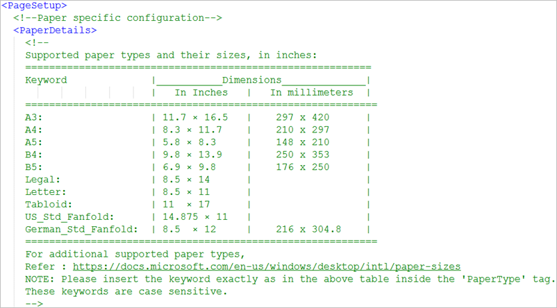

Configure Journaling Paper Type
The default paper type is A4. To specify additional supported paper types, see supported paper types.
- In the <PageSetup> section of the template file, navigate to the <PaperDetails> section.
- Within the <PaperType> tag, enter the exact paper type (Keyword) as in the Paper Details section. For example, <PaperType>A4</PaperType>.


NOTE:
Based on the server printer configured and/or the paper type selected for journaling, you may need to adjust the printer’s default settings as recommended in the printer’s manual.
For printer EPSON 2090, the front and rear tractor settings must be adjusted according to the dimensions of the paper type selected.
For example, for Paper Type = German_Std_Fanfold, you must set the following settings (by changing the default 11 inches) using the EPSON 2090 printer’s control panel default-setting mode.
- Page length for front tractor = 12 inches
- Page length for rear tractor = 12 inches
For more information on how to change printer’s default settings, refer to the Epson LQ_2090 Printer’s User Guide.